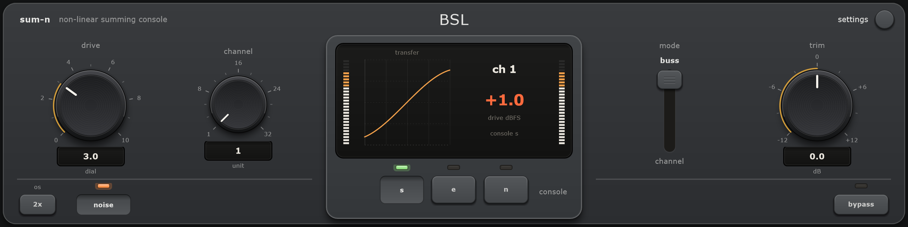
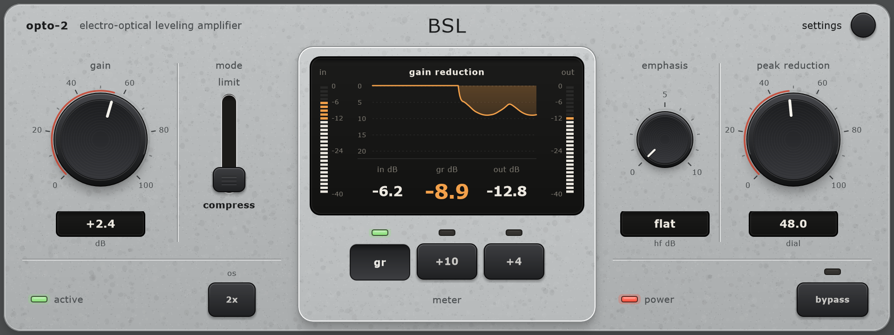
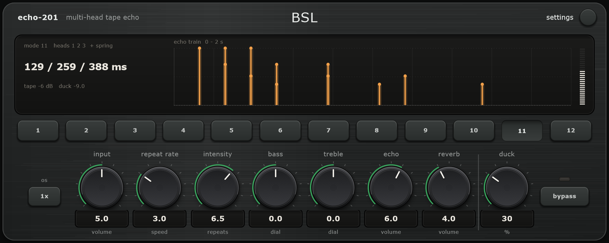

Ovrtone 1.1.1
Smoother playback, faster editing, Stereo Out automation. Run the installer and pick a type; run it again any time to switch.
- Full: Ovrtone, the Stem Splitter model, the documents, the 35 BSL Classics plugins, and Undrtone Tune and Undrtone Key (auto-tune and key finder).
- Compact: the program only, about 55 MB.
FreeWindows 10+ · 64-bit
Ovrtone-1.1.1-setup.exe · 399 MB
New: the 12 MB 1.1.2 update (new Tracks area, edit many regions at once). Run it after the installer, or over 1.1.0 or 1.1.1.
If Windows warns you
Ovrtone isn't code-signed yet, so Windows may say “Windows protected your PC”. Click More info, then Run anyway.
Some antivirus programs (Norton, Avast, AVG, McAfee) block new programs they haven't seen. If Ovrtone won't open, add the Ovrtone folder to your antivirus's exclusions.
Good to know
Before you installRequirements
- System: Windows 10 or later, 64-bit.
- Full installation: Ovrtone, Stem Splitter model, documents, BSL Classics, Undrtone Tune and Undrtone Key.
- Compact installation: the program only, about 55 MB.
- First launch scans your plugins once. With a big collection that can take a few minutes.
Known gaps
- No stock instruments or sound library, by design. Bring your own plugins and samples.
- No Mac or Linux build yet.
- MP4 video export of the visualiser comes later.
Free software · GPL-3.0-or-later
Request the source
Want the source code?
Ask and we'll send you a link to the source for the version you downloaded.